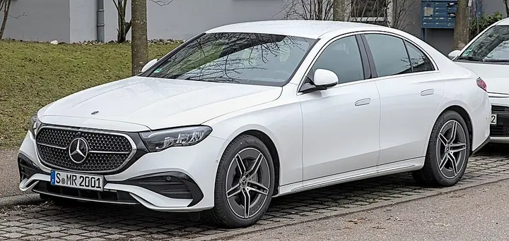
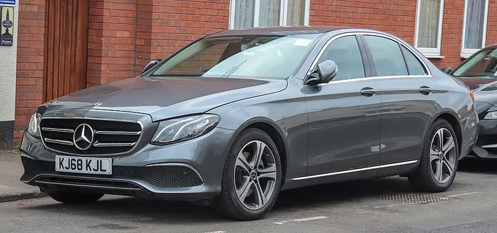
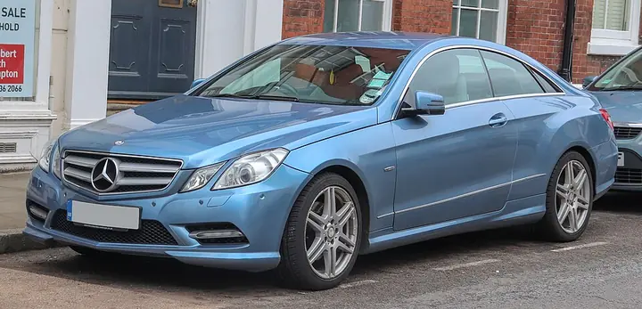
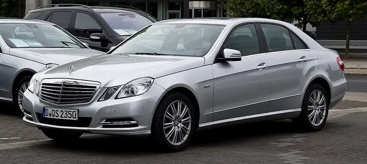
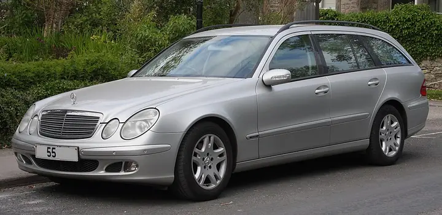
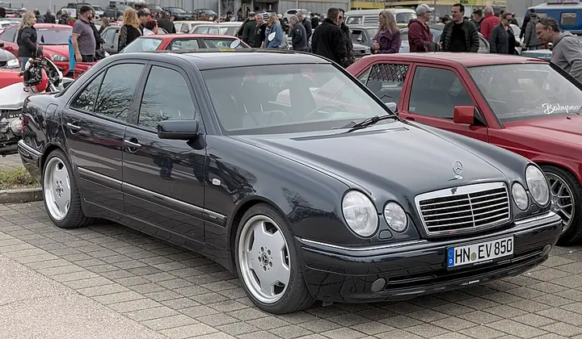
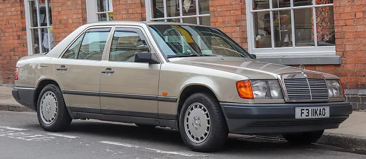
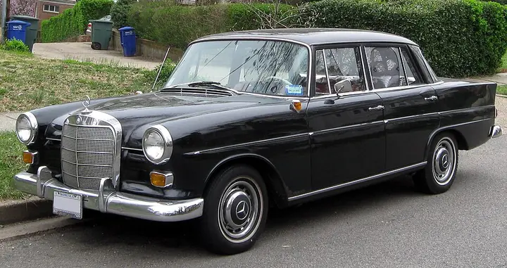

Mercedes-Benz E-Class
Sixth generation (W214; 2023) · 2023–present
Abstract
This generation of the Mercedes-Benz E-Class is an executive car (E), built May 2023 – present in Germany: Sindelfingen, China: Beijing (Beijing Benz, for V214 models), India: Chakan, Pune (Mercedes-Benz India) and other plants. Body styles: 4-door saloon, 5-door estate. Designed by Gorden Wagener (design director), Michael Frei, Robert Lešnik. This generation has its own article: Mercedes-Benz E-Class (W214).


1Specifications
| Production | May 2023 – present |
|---|---|
| Model years | 2024–present |
| Assembly | Germany: SindelfingenChina: Beijing (Beijing Benz, for V214 models)India: Chakan, Pune (Mercedes-Benz India)Indonesia: Bogor (Inchcape Indomobil)Malaysia: Pekan (HICOM)Thailand: Samut Prakan (TAAP)Vietnam: Ho Chi Minh City (MBV) |
| Designer | Gorden Wagener (design director)Michael FreiRobert LešnikBastian Baudy (sketch)Torben Ewe (light design)Andreas Franke (interior design) |
| Class | Executive car (E) |
| Body style | 4-door saloon5-door estate |
| Platform | MRA2 |
| Engine | Petrol mild hybrid:2.0 L M 254 turbo I43.0 L M 256 turbo I6Petrol plug-in hybrid:2.0 L M 254 turbo I43.0 L M 256 turbo I6Diesel mild hybrid2.0 L OM 654 turbo I43.0 L OM 656 turbo I6Diesel plug-in hybrid2.0 L OM 654 turbo I4 |
| Electric motor | 48 V integrated starter-generator (mild hybrid)Permanent-magnet synchronous (plug-in hybrid) |
| Transmission | 9-speed automatic (9G-Tronic) |
| Battery | 48 V lithium-ion (MHEV)25.4 kWh lithium-ion (PHEV) |
| Wheelbase | 2961 mm |
| Length | 4949 mm |
| Width | 1880 mm |
| Height | 1480 mm |
| Weight | 1825–2265 kg |
| Related | Mercedes-Benz C-Class (W206)Mercedes-Benz S-Class (W223)Mercedes-Benz CLE (C236/A236) |
| Predecessor | Mercedes-Benz E-Class (W213) |
2Previous generations





_%E2%80%93_Frontansicht,_23._September_2012,_D%C3%BCsseldorf.jpg){kind=link}

_-_2.2_CDI_(150PS)_automatic_-_2025-04-05,_front_left.jpg){kind=link}





.jpg){kind=link}


3Generation by generation
Length +11% from the first to the last
W120 19534,460 mm
W110 19614,730 mm
W123 19754,725 mm
W124 19854,755 mm
W210 19944,795 mm
W211 20024,834 mm
Sedan and wagon (W212) 20084,868 mm
Coupe and convertible (C207/A207) 20094,698 mm
W213 20164,923 mm
W214 20234,949 mm
Weight +59% from the first to the last
W120 19531,150 kg
W110 19611,289 kg
W123 19751,390 kg
W124 19851,735 kg
W210 19941,440 kg
W211 20021,560 kg
Sedan and wagon (W212) 20081,540 kg
Coupe and convertible (C207/A207) 20091,560 kg
W213 20161,605 kg
W214 20231,825 kg